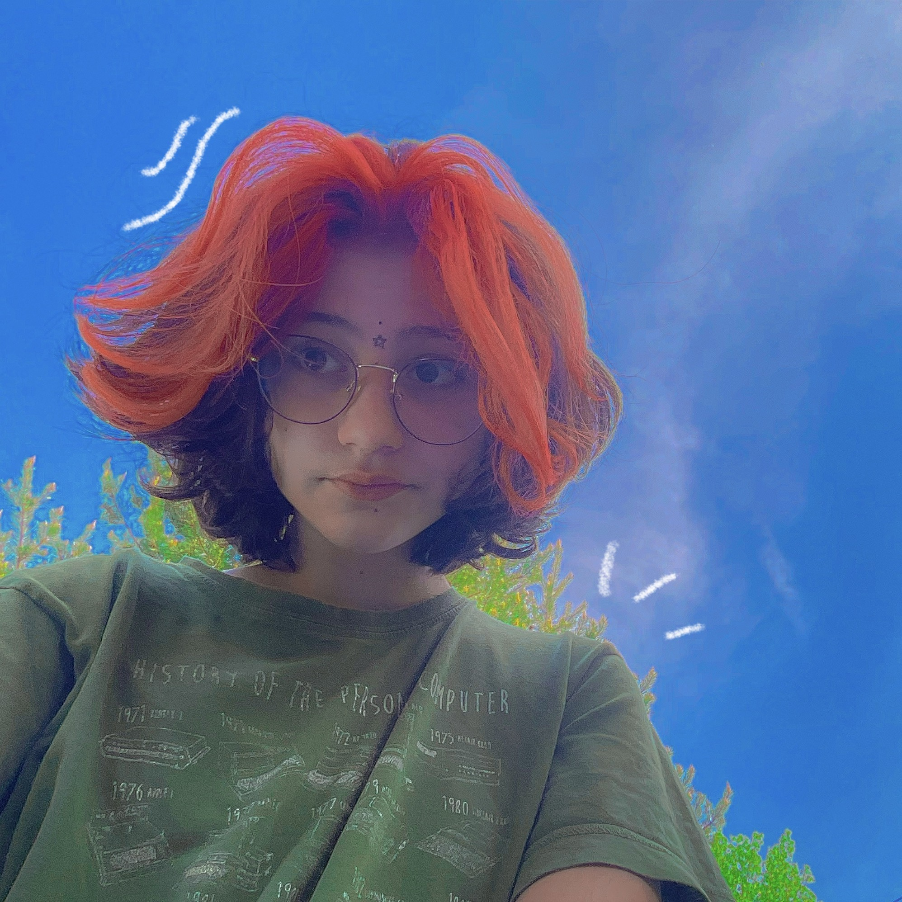

Szervusz!
Az életem eddig, röviden
A nevem Nehéz-Posony Léna. 2008 november 25-én születtem. Esett a hó, ezért ha megkérdezik, milyen évszakba születtem, azt válaszolom: télen. Pedig tudom, hogy november ősszel van, de mégis.
Születésem óta ugyanott élek. Még sohase költöztem el, ideiglenesen sem. Nagyon szeretem a szobám, mivel nagy, de mégis otthonos.
Az iskolát 2015-ben kezdtem. Egy állami iskolába jártam, amit nagyon szerettem. Sok barátom volt, és a tanárok is kedvesek voltak. A mostani legjobb barátomat is ott ismertem meg. Második óta hetente találkozunk iskolán kívül is. Azonban amikor fölsős lettem, elkezdett romlani a helyzet, mivel nagyon rossz új tanárokat kaptunk. Egyedül a magyar- és angoltanárt szerettem, megértő volt, vicces, de jól tanított. A matek és egyben tesi tanárom azonban szörnyen gonosz volt. Az volt a hobbija, hogy megalázza a diákjait az osztály előtt. Ezért is döntöttem úgy, hogy minél hamarabb iskolát váltok.
Hetedik osztályban érkeztem a Poliba. Nagyon szeretem ezt az iskolát. És annak ellenére, hogy igen hullámzóak voltak az elmúlt éveim, most úgy érzem, megtaláltam a helyem.
Ezen az oldalon még más infókat is megtudhatsz rólam. A bal oldalon található témák közül választhatsz, kattints a címre, ami a leginkább érdekel!
Elérhetőségek
sulis mail: posonylena@poli.hutelefonszám: 06 20 3157806
instagram:_np.l3n4